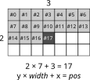
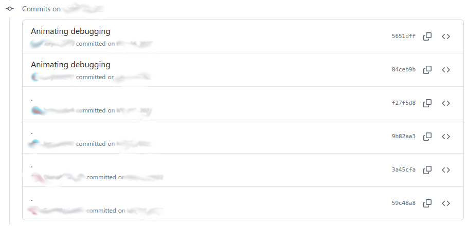
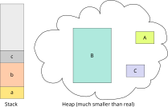
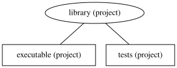
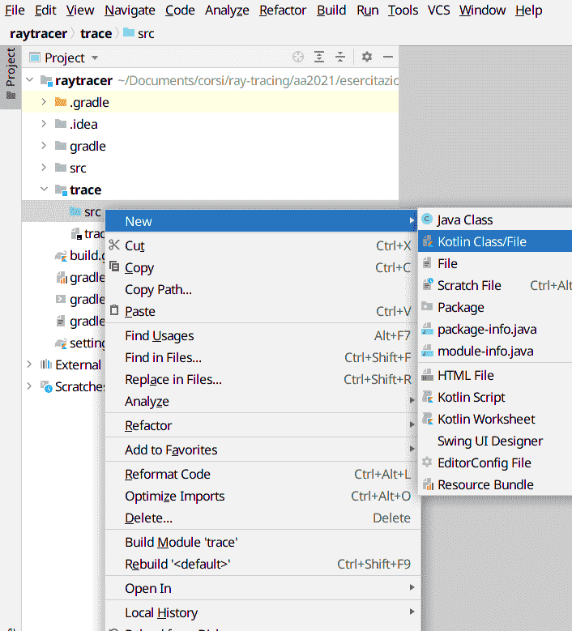
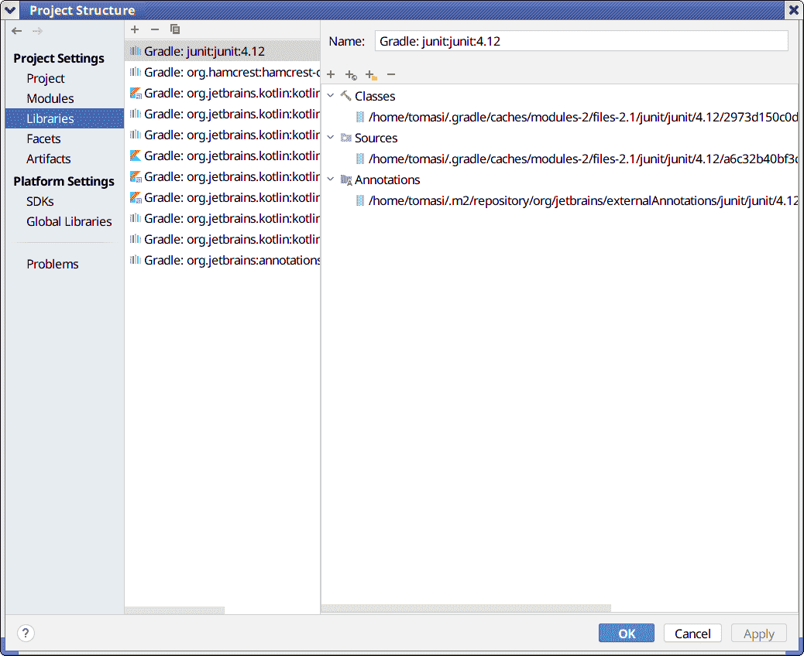
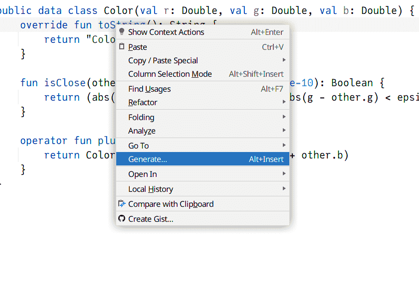
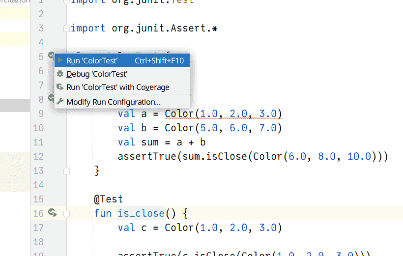

Calcolo numerico per la generazione di immagini fotorealistiche
Maurizio Tomasi maurizio.tomasi@unimi.it
It will take some time before you can produce photorealistic images (You didn’t want to end this course in two weeks, did you?!?)
The problem is that we need a lot of infrastructure before we can solve the rendering equation
Our first image will be a so-called black triangle, to use a well-known meme.
We saw that the colors perceived by the human eye can be encoded using three scalars R, G, B.
Our task for today is to implement a Color data type
that encodes a color using three 32-bit floating-point numbers.
We’ll deal with the conversion from RGB to sRGB next week, when we will talk about graphics formats (PNG, Jpeg, etc.)
As I did last week, I will show you a few examples in Python
Let’s define a class named Color using
@dataclass (it’s like struct in C++):
We can create colors using these syntaxes:
Colorclass Color:
# ...
def __add__(self, other):
"""Sum two colors"""
return Color(
self.r + other.r,
self.g + other.g,
self.b + other.b,
)
def __mul__(self, other):
"""Multiply two colors, or one color with one number"""
try:
# Try a color-times-color operation
return Color(
self.r * other.r,
self.g * other.g,
self.b * other.b,
)
except AttributeError:
# Fall back to a color-times-scalar operation
return Color(
self.r * other,
self.g * other,
self.b * other,
)
# Etc.HdrImageHdrImage alongside
Color. It will be used to represent a HDR image as a 2D
matrix of Color instances.HdrImage:
width) and rows (height);Color matrixThe most natural type for a matrix is a 2D array with size
(width, height)…
…but it’s more efficient to use a
monodimensional array with size
width × height. (This is not the case if you use Julia:
just rely on Matrix!)
Not every programming language supports 2D arrays (e.g., Kotlin), and if you use them in the wrong way, they can be inefficient:
HdrImageIn Python, we can implement HdrImage in this
way:
The array of values has \mathtt{width} \times \mathtt{height} elements
However, we want to identify an element in the matrix using a
pair (column, row), i.e., (x, y).
Given some position (x, y) for a pixel (with
x the number of the column and y the row), the
index in the array self.pixels can be calculated in this
way:

get_pixel and set_pixeldef get_pixel(self, x: int, y: int) -> Color:
"""Return the `Color` value for a pixel in the image
The pixel at the top-left corner has coordinates (0, 0)."""
assert (x >= 0) and (x < self.width)
assert (y >= 0) and (y < self.height)
return self.pixels[y * self.width + x]
def set_pixel(self, x: int, y: int, new_color: Color):
"""Set the new color for a pixel in the image
The pixel at the top-left corner has coordinates (0, 0)."""
assert (x >= 0) and (x < self.width)
assert (y >= 0) and (y < self.height)
self.pixels[y * self.width + x] = new_colorCan we avoid those repetitions?
Errors are lurking around every corner!
This example was taken from a test in the TNDS course:
To verify the correctness of a function, we should call it with non-trivial data and check the result.
Once we have written some code, we must verify its correctness by running it on inputs for which we can reasonably foresee the expected outputs.
The simplest way is to print the output and visually check it’s ok:
color1 = Color(1.0, 2.0, 3.0) # Avoid trivial cases like Color(3.0, 3.0, 3.0)
color2 = Color(5.0, 6.0, 7.0) # in your tests!
print(color1 + color2)
print(color1 * 2)This produces the output
Color(r=6.0, g=8.0, b=10.0)
Color(r=2.0, g=4.0, b=6.0)Can we do better?
Checking calculations is boring and error-prone.
Computers have been invented to avoid doing repetitive and boring stuff!
Every modern language offers some built-in system to run tests automatically. (C++ is a notable exception, but there are lots of libraries that fill this gap.)
Our starting point is this Python code:
color1 = Color(1.0, 2.0, 3.0)
color2 = Color(5.0, 6.0, 7.0)
print(color1 + color2)
print(color1 * 2)We can improve it using assert:
The fact that the new version of our Python scripts does not produce any output is expected, as the implementation is bug-free. But if we get no output, are we really sure that the tests were executed as expected?
A common trick is to implement wrong tests and make them fail:
color1 = Color(1.0, 2.0, 3.0)
color2 = Color(5.0, 6.0, 7.0)
assert (color1 + color2) == Color(6.0, 8.0, 11.0) # 11.0 instead of 10.0: wrong!
assert (2 * color1) == Color(3.0, 4.0, 6.0) # 3.0 instead of 2.0: wrong!Once we see that the tests failed, we can fix them and make them pass.
In the tests we are going to write, we will have to use logical
operations and comparisons (for Python, these are typically
==, <, >,
<=, >=, etc.)
We must handle floating-point numbers with special care!
Avoid numbers with a decimal part, like 2.1 or
5.09, if possible
Small integer numbers like 16.0 are encoded without
rounding, so prefer them in tests, if possible (we did so for
Color in our Python example)
As it’s not always possible to use integer numbers, implement a
function are_close (if your language doesn’t provide one
already):
Tests can provide a guidance for the implementation of types and functions.
Implementing get_pixel and set_pixel
leads to repetitions:
def get_pixel(self, x: int, y: int) -> Color:
assert (x >= 0) and (x < self.width)
assert (y >= 0) and (y < self.height)
return self.pixels[y * self.width + x]
def set_pixel(self, x: int, y: int, new_color: Color):
assert (x >= 0) and (x < self.width)
assert (y >= 0) and (y < self.height)
self.pixels[y * self.width + x] = new_colorWe must verify the correctness of coordinates twice 🙁
We must verify that wrong coordinates are rejected both by
set_pixel and get_pixel:
We can improve our code and tests by modularizing our implementation, i.e., we decompose it in simpler parts.
def valid_coordinates(self, x: int, y: int) -> bool:
return ((x >= 0) and (x < self.width) and
(y >= 0) and (y < self.height))
def pixel_offset(self, x: int, y: int) -> int:
return y * self.width + x
def get_pixel(self, x: int, y: int) -> Color:
assert self.valid_coordinates(x, y)
return self.pixels[self.pixel_offset(x, y)]
def set_pixel(self, x: int, y: int, new_color: Color):
assert self.valid_coordinates(x, y)
self.pixels[self.pixel_offset(x, y)] = new_colorHere are the tests for the new implementation:
img = HdrImage(7, 4)
# Check that valid/invalid coordinates are properly flagged
assert img.valid_coordinates(0, 0)
assert img.valid_coordinates(6, 3)
assert not img.valid_coordinates(-1, 0)
assert not img.valid_coordinates(0, -1)
assert not img.valid_coordinates(7, 0)
assert not img.valid_coordinates(0, 4)
# Check that indices in the array are calculated correctly:
# this kind of test would have been harder to write
# in the old implementation
assert img.pixel_offset(3, 2) == 17 # See the plot a few slides before
assert img.pixel_offset(6, 3) == 7 * 4 - 1This kind of test is called unit test
OOP programming encourages the declaration of some methods/fields as “private”, so that they cannot be invoked outside a class.
However, this practice makes the implementation of unit tests
more difficult. Functions like valid_coordinates and
pixel_offset should be declared “private”, but in this way
we cannot invoke them directly in tests!
The simplest solution is to define these functions as “public” so
that we can write tests in the usual way, but to prepend their name with
an underscore “_”. (In Computer Science, it is customary to
consider names like _valid_coordinates and
_pixel_offset as private.)
==, which works because we specified integer
numbers:Color instances:Writing good tests is one of the skills that this course aims to develop.
Therefore, it is essential that your repositories demonstrate a regular implementation of tests, lesson by lesson.
Regularity in the implementation of tests and their quality is one of the criteria by which you will be assessed in the exam.
(Moreover, it will be a good showcase of your code cleanliness in the future!)
Your GitHub or LinkedIn profile may be reviewed during job interviews
If you take good care of the repository for this course, it may serve as a “showcase” to include in your resume
Therefore, avoid writing vague comments in your commits!

From now on, you will work in groups: each of you will have to choose a part of the code to implement.
We will start using the advanced features of Git to manage conflicts, that is, situations in which a part of the code is modified simultaneously by multiple people.
Choose a project name (we will use myraytracer for
this exercise).
Structure the project as follows:
Color and HdrImage
classes, and their operationsColor and
HdrImage classesCommit the project to GitHub, add team members, and send an email to the teacher (maurizio.tomasi@unimi.it.)
Don’t be afraid of creating conflicts and performing merge commits: the more you practice with them, the easier it will be in the future.
In each group, only one person should create the project skeleton, create the GitHub page, and save it.
The other group members become project collaborators (see the following slide for more information).
Think about how to divide the work among group members; for
example, for Color:
are_colors_close functionEach of you will need to run git push on your
repository on GitHub to send your changes (“commit”) to the
server
Once this is done, your team members can download the changes
using git pull
A way to divide the work is for one of you to implement a method
(e.g., valid_coordinates) while the other writes the test
simultaneously:
valid_coordinates + test;pixel_offset + test;get_pixel/set_pixel + test.ColorThree fields r, g, b of
type 32-bit floating-point: they don’t need 64 bits, and would actually
waste memory and processing time
For OOP languages, don’t lose time writing getters and setters
like GetR, etc.: they are long to write, prone to errors,
and make the code harder to read
A method/function that checks if two colors are similar (useful for testing);
Addition of colors;
Multiplication of color and color or color and scalar;
If appropriate, implement a function that converts an object into
a string (e.g., <r:1.0, g:3.0, b:4.0>): it will be
handy for debugging
Most programming languages differentiate between value and reference types.
Value types are direct values that can be accessed directly, and are always allocated on the stack: they are very fast to use, but cannot take up much memory (usually only a few kilobytes).
Reference types are pointers to the actual data, and can be allocated on the stack or heap: they can consume all available memory, but are slower to access and manipulate.
Exceptions include languages based on the Java Virtual Machine (Java, Kotlin, Scala, etc.), where there are only reference types (although the JVM may automatically convert values to references if it deems it beneficial).

#include <iostream>
#include <vector>
int main() {
int a{}; // Allocated on the stack
int * b{new int}; // Allocated in the heap
int c[] = {1, 2, 3}; // Allocated on the stack
std::vector<int> v{1, 2, 3}; // "v" on the stack, but the three numbers in the heap
a = 15; // This is fast
*b = 16; // This is slower
std::cout << a << ", " << *b << "\n";
// Output:
// 15, 16
}In Python, any variable (even integer variables like
x = 1) is allocated on the heap (one of the reasons why it
is much slower than C++)
For programs written in C/C++/Fortran/Julia, the stack size is
set by the operating system. On systems using Posix (such as
Linux/macOS), you can find the value in KB using the command
ulimit -s:
$ ulimit -s
8192The value of 8 MB is characteristic of Linux; for macOS, it is 0.5 MB.
For the .NET platform (including Visual Basic and C#), a 1 MB stack is used.
The JVM (Java, Kotlin) uses a 1 MB stack, which is only used for primitive types (integers, booleans, floating-point numbers).
The Color class is quite small: it requires 3
floating-point numbers in memory, making it a good candidate for a value
type (this is not true for HdrImage).
The way you ask for a value type depends on the programming language:
struct and class can be used
(they are equivalent), but when using them, avoid using new
and delete.struct is used for value types (but not
class), while class is used for reference
types.object or record can be used,
but not class.object can be used, but not
ref object.StaticArrays
package can be used.Creating Color objects and using the
is_close function:
It is important to test that is_close returns
False when necessary (note that this is a
negative test):
Sum/product between colors:
Color-scalar product (you can implement scalar-color too, if you want):
def test_image_creation():
img = HdrImage(7, 4)
assert img.width == 7
assert img.height == 4
def test_coordinates():
img = HdrImage(7, 4)
assert img.valid_coordinates(0, 0)
assert img.valid_coordinates(6, 3)
assert not img.valid_coordinates(-1, 0)
assert not img.valid_coordinates(0, -1)
assert not img.valid_coordinates(7, 0)
assert not img.valid_coordinates(0, 4)
def test_pixel_offset():
img = HdrImage(7, 4)
assert img.pixel_offset(0, 0) == 0
assert img.pixel_offset(3, 2) == 17
assert img.pixel_offset(6, 3) == 7 * 4 - 1
def test_get_set_pixel():
img = HdrImage(7, 4)
reference_color = Color(1.0, 2.0, 3.0)
img.set_pixel(3, 2, reference_color)
assert are_colors_close(reference_color, img.get_pixel(3, 2))CMake provides the ability to automatically run tests.
Create this directory tree:
$ tree raytracer
raytracer
├── CMakeLists.txt
├── include
│ └── colors.h <-- Definition of "Color"
├── src
│ ├── colors.cpp <-- Implementation of "Color" (if you *really* need it!)
│ └── raytracer.cpp
└── test
└── colors.cpp <-- Tests for the class "Color"If you implement all the methods for Colors in
include/colors.h (highly recommended! this makes the code
faster), there is no need of src/colors.cpp.
CMakeLists.txtCMake will have to create three products:
Color; choose a name for it
(we will use trace).raytracer. At the moment it is enough that it prints
Hello, world!.colorTest.To create programs we know that there is the
add_executable command; for libraries there is the
analogous add_library.
The dependencies between the trace library and
programs are specified with target_link_libraries.
The sequence of libraries and executables to produce is specified as follows:
add_library(trace
src/colors.cpp
)
# This is needed if we keep .h files in the "include" directory
target_include_directories(trace PUBLIC
$<BUILD_INTERFACE:${CMAKE_CURRENT_SOURCE_DIR}/include>
$<INSTALL_INTERFACE:include>
)
add_executable(raytracer
src/raytracer.cpp
)
target_link_libraries(raytracer PUBLIC trace)
add_executable(colorTest
test/colors.cpp
)
target_link_libraries(colorTest PUBLIC trace)target_include_directories specifies where to look
for colors.h.
To run automatic tests, you need to invoke two commands in
CMakeLists.txt:
enable_testing enables the ability to run tests, and
should be written immediately after the project
command.
add_test specifies which of the executable files to
produce actually runs tests. (You can use it multiple times).
In our case, we will invoke add_test only once to
run colorTest.
To run the tests, in the build directory, simply
invoke ctest.
CMakeLists.txtThis is the complete content of CMakeLists.txt:
cmake_minimum_required(VERSION 3.12)
# Define a "project", providing a description and a programming language
project(raytracer
VERSION 1.0
DESCRIPTION "Hello world in C++"
LANGUAGES CXX
)
# Force the compiler to use the C++23 standard (or whatever you want)
set(CMAKE_CXX_STANDARD 23)
# If the compiler does not support the standard, stop!
set(CMAKE_CXX_STANDARD_REQUIRED ON)
# Turn on the support for automatic tests
enable_testing()
# This is the library. Pick the name you like the most; we use "trace"
add_library(trace
src/colors.cpp
)
# Help the compiler when you write "#include <colors.h>"
# See "cmake-generator-expressions(7)" in the CMake manual
target_include_directories(trace PUBLIC
$<BUILD_INTERFACE:${CMAKE_CURRENT_SOURCE_DIR}/include>
$<INSTALL_INTERFACE:include>
)
# This is the program that we will run from the command line
add_executable(raytracer
src/raytracer.cpp
)
# The command-line program needs to be linked to the "trace" library
target_link_libraries(raytracer PUBLIC trace)
# This program runs the automatic tests on the "Color" class
add_executable(colorTest
test/colors.cpp
)
# The test program too needs to be linked to "trace"
target_link_libraries(colorTest PUBLIC trace)
# Here we specify that "colorTest" is a special executable, because
# it is meant to be run automatically whenever we want to check our code
add_test(NAME colorTest
COMMAND colorTest
)Try modifying one of the tests on the Color type so
that it fails:
test/colors.cpp filebuild directory and run
ctestgit push
commandIt would be good if each group member tried to do this.
Release build type is used instead of
Debug, and you used assert in your code..yml file to use Debug instead
of Release;#undef NDEBUG before
#include <cassert> (better!);my_assert function (even better!);Julia natively implements the required structure type (library, executable, executable with tests):
test inside;main seen in the previous
exercise can be used as an executable.Creating a new package therefore configures everything already in the required way, except for the executable.
Create a new package with the commands seen last time:
Julia supports color management through ColorTypes and Colors:
This will modify Project.toml and add
Manifest.toml, which should be saved in Git (look at what
they contain!).
For today, there is no need to understand the difference between value and reference types, because you will be using Colors and ColorTypes.
The Colors library implements a series of template types:
However, the library does not implement the color operations that
interest us (sum, difference, product, comparison). Implement them
yourself in the src/Raytracer.jl file (the file name
depends on your project name).
The types in ColorTypes are parametric
(like templates in C++): the RGB type is actually
RGB{T}, with T as a parameter.
You need to redefine the fundamental operations +,
-, * and ≈
(\approx), which in Julia are present in the
Base package.
You will need to write something like this in
src/Raytracer.jl:
To implement the tests, create a test/runtests.jl
file, so that the directory structure is as follows:
To write tests, you need to add the Test library:
In the runtests.jl file, you need to write the test
procedures. The Test library implements the @testset
(groups tests) and @test macros:
To run them from the REPL, write
Manifest.toml FileProject.toml file to indicate general
information about the package, and it can be edited.Manifest.toml file is generated automatically, and
it pins the version numbers of the dependencies used by your
package.Project.toml file to
Git.Manifest.toml there are two possibilities:
.gitignore).
The dotnet command supports the creation of
solutions and projects.
A progetto is anything that can be produced from source C# files (executables, libraries)…
A solution is a collection of projects. Each element of the diagram is a project, and the whole diagram is a solution.
To create a solution, run dotnet new sln
Projects in dotnet can be of three types:
dotnet new console)dotnet new classlib)dotnet new xunit)To specify that project A depends on B,
write dotnet add A reference B
To add new projects to a solution, use
dotnet sln add
Here are the commands to run to create the solution we want:
# Create a new solution that will include:
# 1. The library
# 2. The executable (currently printing «Hello, world!»)
# 3. The tests
dotnet new sln -o "Myraytracer"
cd Myraytracer
# 1. Create the library, named "Trace", and add it to the solution
dotnet new classlib -o "Trace"
dotnet sln add Trace/Trace.csproj
# 2. Create the executable, named "Myraytracer", and add it to the solution
dotnet new console -o "Myraytracer"
dotnet sln add Myraytracer/Myraytracer.csproj
# 3. Create the tests, named "Trace.Tests", and add them to the solution
dotnet new xunit -o "Trace.Tests"
dotnet sln add Trace.Tests/Trace.Tests.csproj
# Both the executable and the tests depend on the «Trace» library
dotnet add Myraytracer/Myraytracer.csproj reference Trace/Trace.csproj
dotnet add Trace.Tests/Trace.Tests.csproj reference Trace/Trace.csproj
# Create a .gitignore file
dotnet new gitignoreDo everything from the command line and then open the project in Rider: it’s more instructive!
This solution has generic names for each file, so it is wise to change them into something easier to recognize.
Rename the files so that they have the following structure:
Myraytracer
├── Myraytracer.sln
├── Myraytracer
│ ├── Myraytracer.cs <-- This was Program.cs
│ └── Myraytracer.csproj
├── Trace
│ ├── Color.cs <-- This was Class1.cs
│ ├── HdrImage.cs <-- New file
│ └── Trace.csproj
└── Trace.Tests
├── ColorTests.cs <-- This was UnitTest1.cs
├── HdrImageTests.cs <-- New file
└── Trace.Tests.csproj// This should be put in Trace.Tests/ColorTests.cs
using System;
using Xunit;
using Trace;
namespace Trace.Tests
{
public class ColorTests
{
[Fact]
public void TestAdd()
{
Color a = new Color(1.0f, 2.0f, 3.0f);
Color b = new Color(5.0f, 6.0f, 7.0f);
// C# convention: *first* the expected value, *then* the test value
Assert.True(Color.are_close(new Color(6.0f, 8.0f, 10.0f), a + b));
// ...
}
}
}You can run tests with dotnet test, but you can also use
Rider (this is so handy! Refer to the slides for
Kotlin.)
Define Color as a struct and
HdrImage as a class; for Color,
include defaults:
Define pixels in HdrImage as a dynamic
array
Define a constructor for HdrImage that requires
width ed height and initializes
pixels allocating
the correct length. Then set the color of every pixel to
black.
D offers excellent support for tests via the keyword
unittest (it’s awesome!)
It’s not needed to define tests in separate files, as it is the case for C++ and C#.
To run the tests, execute the command
$ dub testSee the documentation for more information: Unit tests
IntelliJ IDEA is based on Gradle, which is the analogous of CMake for C++.C++.
Gradle can be programmed using Groovy (a language derived from Java) or Kotlin.
As Java and Kotlin are highly modular, for this course there is no need to differentiate between a library and an executable.
Therefore, you can create a project exactly like you did last week.
In IntelliJ IDEA, you can create new classes via the Project window (on the left):

Color classIn Kotlin, use data classes to define
Color: they are so easy to use!
Define is_close and operators plus (sum
of two colors) and times (product between a color and a
number).
HdrImage classKotlin lets you to define classes in a compact form (a dream for whoever has used Java!). Here is an example:
Be sure to understand the difference between val and
var!
IntelliJ IDEA generates and handles tests automatically.
You should use JUnit; if the IDE asks you which version to use, pick 5.
Check the version you are using by opening menu «File | Project structure».

In this screenshot, JUnit’s version is 4.
Right-click on a class name and pick Generate.
In the window, pick the right version for JUnit and choose the
methods that you want to test. (In our case, they are
is_close, plus, and
times).
Once you have implemented the tests using assertTrue
and assertFalse, run them using the icons on the
left.


For today, it is not necessary for you to structure the code into complex modules.
Create a basictypes.rs file in which you will define
both the Color type and the HdrImage type,
along with all the tests associated with them.
You can leave the main.rs file intact for the moment
(with the Hello, world! message).
To automatically format the code, use the cargo fmt
command.
For Color, derive the Copy,
Clone and Debug traits to simplify your
life:
For HdrImage, define the pixels member
of type Vec<Color>.
Also define a function
create_hdr_image(width: i32, height: i32) -> HdrImage,
which initializes pixels correctly.
Rust natively supports tests using the #[cfg(test)]
and #[test] annotations.
Tests can be executed automatically with the command
$ cargo testConsult the Rust guide; a more in-depth discussion can be found in chapter 11 of The Rust Programming Language (Klabnik & Nichols).
Implementing the Color and HdrImage
types should be elementary.
Make sure to use object and not
ref object for Color, while for HdrImage it is
indifferent.
Remember that in Nim you need to export both the types and their
members, using *:
HdrImageIn Nim, constructors like in C++ are not needed.
The common practice is to define a newMyType
function that creates the MyType type.
Therefore, add a newHdrImage procedure that accepts
two parameters width and height, initialize
the pixels field using newSeq,
and set all colors to zero (black).
In Nim, you can use the [assert
template](https://nim-lang.org/docs/assertions.html#assert.t%2Cuntyped%2Cstring]
to run tests.
The practice is to create Nim files inside the tests
directory; if these files start with t, they are automatically
executed by the command
$ nimble testTo write tests for the Color and
HdrImage types, create a
tests/test_basictypes.nim file like this: